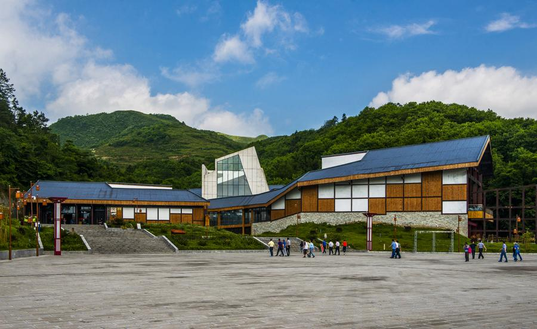
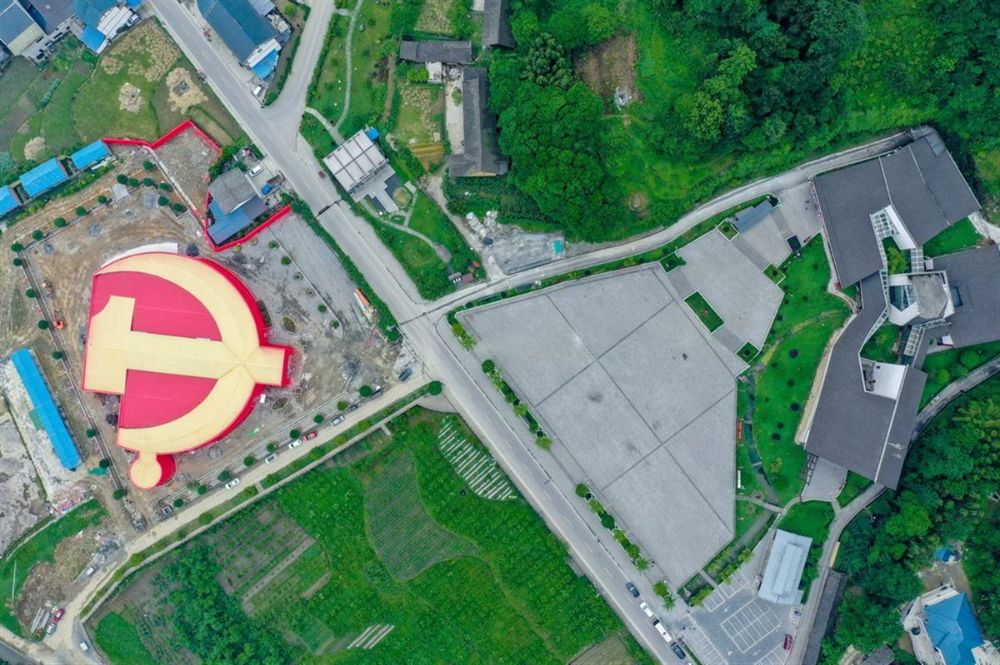

电报、地图、旧照片——先在这里把 1935 年 3 月看清楚。
苟坝会议陈列馆位于播州区枫香镇苟坝村，以会址为依托、以马灯外形为标志，建筑面积 3343 平方米，共两层。
展陈分为四个展厅：《从遵义会议到鸭溪会议》《具有历史意义的苟坝会议》《苟坝会议到会理会议》《贵州省党员干部党性体检基地》。馆内有历史文物、文献、图片和雕塑（包括毛泽东手提马灯雕像），系统呈现苟坝会议前因后果。
陈列馆是会址旁新建的展馆建筑，和会址（卢氏老屋，当地称"新房子"）不是同一栋房子。